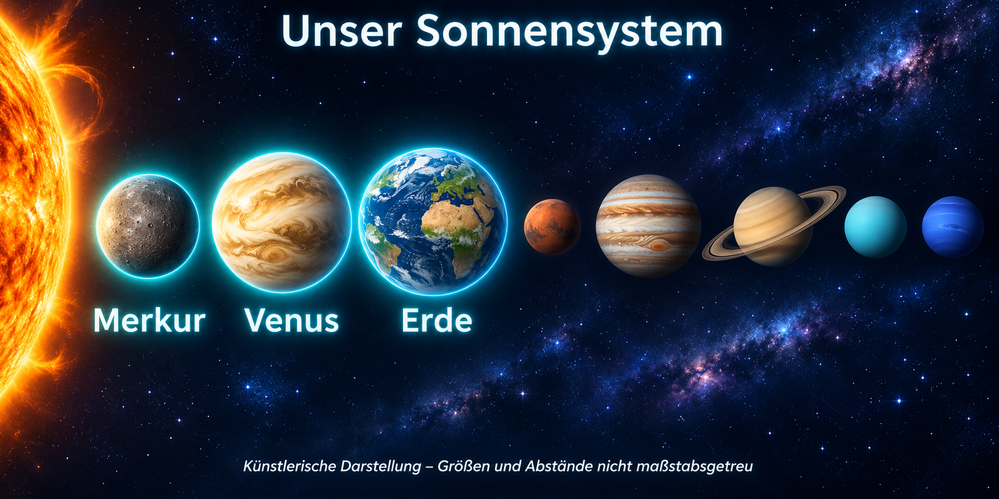
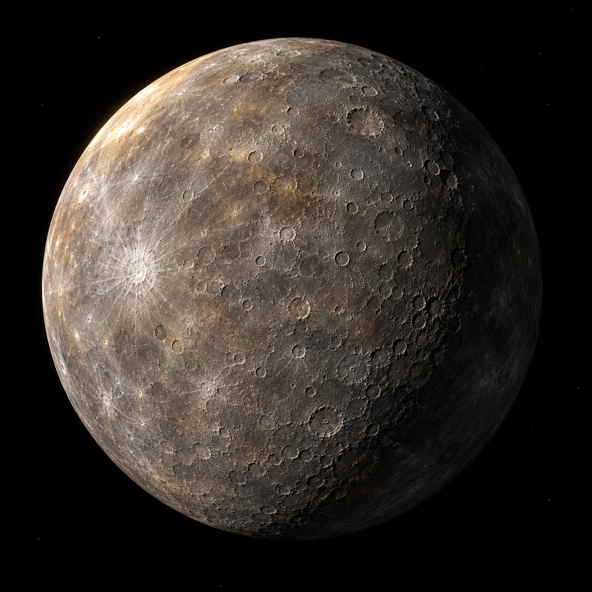
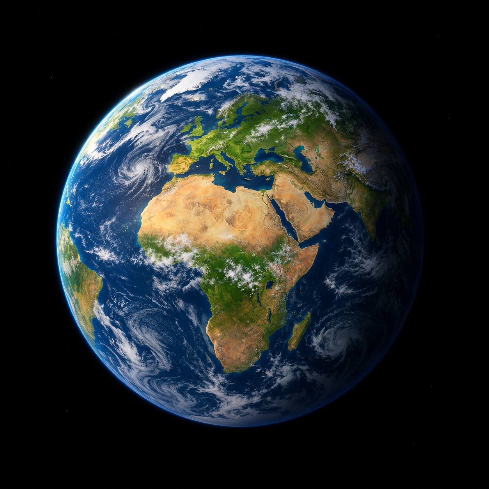

Ein Blick auf unser Sonnensystem

Merkur

Merkur ist der kleinste Planet und der Sonne am nächsten.
|
Venus

Venus besitzt eine dichte Atmosphäre und ist sehr heiß.
|
Erde

Die Erde ist unser Heimatplanet.
|